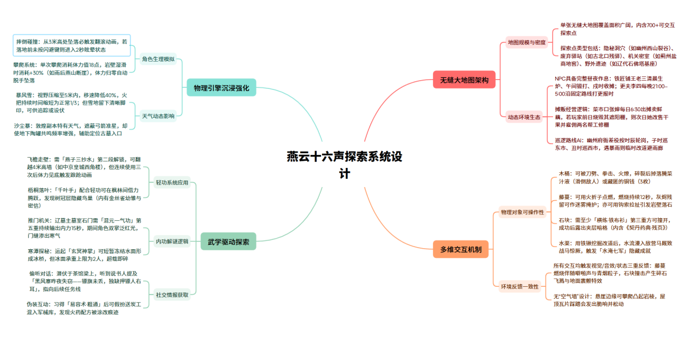
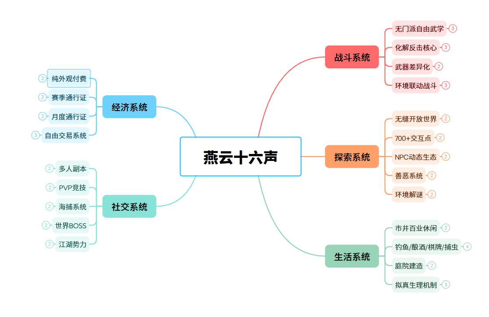
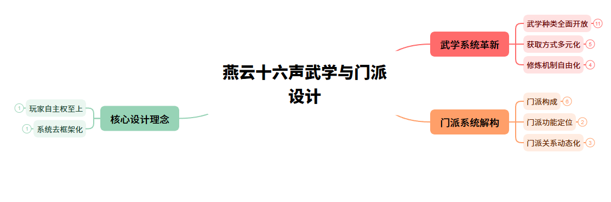
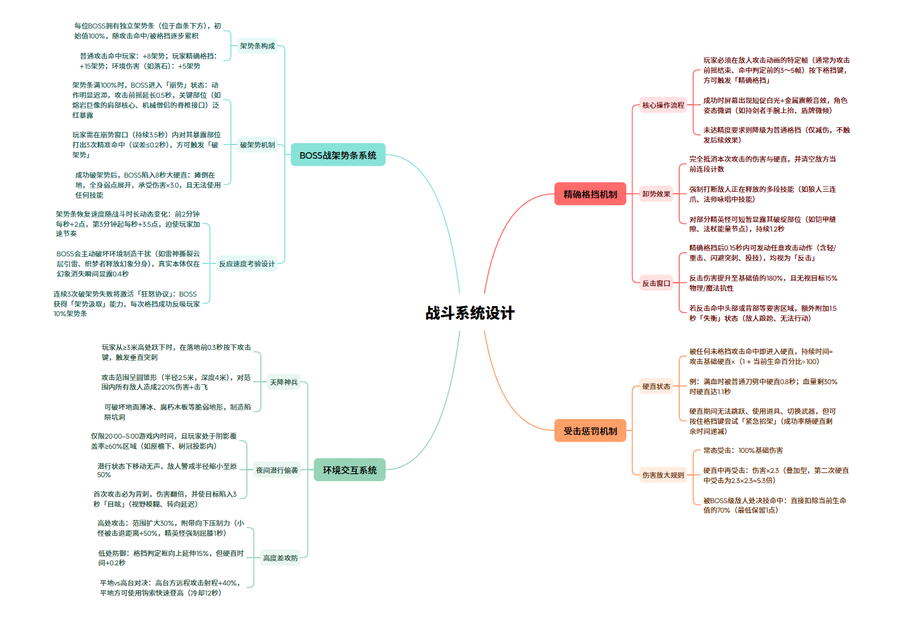

| 简要信息 | 详细说明 |
|---|---|
| 游戏名称 | 《燕云十六声》 |
| 游戏类型 | 开放世界武侠动作RPG |
| 开发商 | Everstone Studio（网易旗下独立工作室） |
| 发行商 | 网易（杭州）网络有限公司 |
| 时代背景 | 五代十国末至北宋初年 |
| 开发团队规模 | 超300人 |
| 研发预算 | 超8400万美元 |
| PC端公测 | 2024年12月27日 |
| 移动端上线 | 2025年01月09日 |
| 国际服PC/PS5 | 2025年11月15日 |
| 移动端海外上线 | 2025年12月 |
| Xbox全平台 | 2026年06月07日 |
| 核心卖点 | 无门派自由武学、高自由度开放世界、纯外观付费、16种传统文化建树 |
燕云的时代设定在五代十国末到北宋初年，美术上走写实国风，采用虚幻5引擎，能明显感觉到制作组刻意避开了传统武侠网游那种柔光滤镜——场景肌理偏粗粝，光影比较真实。真实复刻百工名器、建筑营造、历法天象、民俗游艺、岐黄医术这些传统文化。傩戏、打铁花、舞狮、投壶这些非遗内容也做成了可玩的模块。在国内武侠游戏里，文化考据做到这个深度的，目前就它一家。
我在这游戏上砸了1500多个小时，清河、开封、河西三张大地图的主线全清。
玩下来最大的感受是：这游戏的设计张力不在某个单点有多牛，而在「自由」这两个字贯穿了整个体验——武学获取自由（没门派，路边偷学就行），探索路径自由（700多个交互点随你逛），社交参与自由（想单机就单机，想组队就组队），付费自由（不卖数值）。
从实际体验来看，它的内容——主线、世界探索、奇遇系统——质量非常高，接近3A水准。

本部分数据综合以下渠道获取：
用户增长是典型的「双引擎」模式：2025年1月移动端上线，从PC独占扩到移动端，第一波爆发；2025年11月海外版上线，从国内扩到全球160多个国家和地区，第二波爆发。
有个细节很有意思——制作人在2025年1月底，上线不到一个月的时候就说「已经能养活自己了」，说明商业验证来得非常快。PC玩家占比超60%这个数据也值得注意：虽然移动端贡献了用户基数的大头，但PC端才是核心体验和付费的主力。
| 指标 | 数据 | 来源 |
|---|---|---|
| 全球累计玩家 | 超8000万（截至2026年1月底） | 官方公告、网易2025Q4财报 |
| 海外玩家 | 超2000万 | 今日头条鉴知古今（2026-05-08） |
| Steam历史峰值同时在线 | 25.1万（2025年11月国际服上线后） | 游戏葡萄（2026-04-10） |
| 移动端14个月下载量 | 约2000万次 | 百度百科/Everstone专题报道 |
| 移动端国际服预约 | 超500万 | 阿斯达克财经（2026-06-10） |
| 覆盖国家/地区 | 160+ | 今日头条鉴知古今（2026-05-08） |
| 海外首月玩家 | 突破1500万 | 杭州日报（2026-01-23） |
| PC玩家占比 | 超60%（2025年7月数据） | Everstone专题报道 |
| 2025年底全球用户 | 突破8000万 | 官方公告 |
| 维度 | 数据 | 来源 |
|---|---|---|
| 移动端14个月收入 | 约1.15亿美元 | 百度百科/Everstone专题 |
| 移动端总收入（含国内独占期） | 2.237亿美元 | AppMagic预估报告 |
| 海外移动端6个月收入 | 2210万美元 | AppMagic/陀螺科技（2026-06-17） |
| 美国市场贡献 | 860万美元（海外第一大市场，占比9%） | 陀螺科技 |
| 韩国市场贡献 | 190万美元（海外第三大市场，占比2%） | 陀螺科技 |
| 移动端全球玩家总支出（近半年） | 近1亿美元（约9420万美元） | AppMagic |
| 国内移动端近半年贡献 | 7210万美元（占77%） | AppMagic |
| ROI（投资回报率） | 约1.5倍（仅移动端） | 百度百科 |
| PC端付费占比 | 超50% | Everstone专题报道 |
| Steam畅销榜最高排名 | 全球Top 2 | 游戏葡萄（2026-04-10） |
| Steam美服收入排名 | 第一（1.2版本） | 16yanyun报道 |
| iOS国区畅销榜 | 登顶（一周年版本，2025年12月） | 官方/七麦数据 |
| 网易Q4财报游戏板块增长 | 同比11.8%增长，部分归功于燕云 | 网易2025Q4财报 |
| 平台 | 评分/热度 | 备注 |
|---|---|---|
| Steam好评率 | 84%-88%（特别好评） | 截至2026年5月，全球多语言区均获好评 |
| Steam评测总数 | 78,270条 | 截至2025年12月初 |
| TapTap评分 | 7.5分（8.6万条评价） | 国内主要移动端分发平台 |
| B站官方PV播放量 | 300万+ | 多版本PV累计 |
| 抖音精选APP实机演示 | 72万+播放（1.8万条互动弹幕） | 2026年数据 |
| NGA相关讨论帖 | 1400+ | 截至2026年5月 |
| Steam锁国区仍登顶 | 全球热销榜第三 | 国际服上线初期 |
| Steam长期畅销榜 | 稳定前十 | 2026年Q1-Q2持续表现 |

武学系统是燕云十六声最核心的差异化引擎。它不仅是战斗系统的底座，更是驱动玩家探索开放世界的核心动力——武学获取散布在整个世界中，玩家不是在「升级加点」，而是在「闯荡江湖、遍访名师」中自然成长。
实际体验中，武学系统的「自由感」极强。玩家在探索中偶遇隐士、偷师成功时获得的惊喜感，远强于传统MMO「升级自动学会技能」的被动体验。NGA、TapTap上有大量玩家自发分享偷师路线和武学搭配攻略，说明系统确实有效激发了玩家的探索欲和分享欲。

战斗系统是燕云十六声的核心。它在传统动作RPG的「站桩对砍拼数值」模式之外，通过高惩罚的攻防博弈，将战斗体验从「数值维度」扩展到了「操作维度」。核心不是「我装备多好」，而是「我多了解对手」。
前期体验极佳——学习卸势节奏、适应BOSS招式时的紧张感和成就感非常到位。但中后期问题逐渐暴露：BOSS战循环过于固定（破架势→输出→循环→破架势→重复），战斗时长拉长后新鲜感快速衰减。PVP方面，硬核玩家觉得太简单（卸势窗口过于宽松），轻度玩家觉得抓不住时机——两类玩家的体验落差较大。

探索系统是燕云十六声的「地基」。它不只是承载内容的容器，更是武学获取、剧情推进、生活玩法的统一载体。玩家不是「被要求去探索」，而是「因为有趣所以一直在探索」——这种自驱力是开放世界设计的高阶目标。
玩家口碑层面，探索系统是燕云十六声最强的单项。TapTap、NGA、B站三平台探索玩法的评分分别为9.2、9.1、9.0，均位居同品类前列。玩家票选中「清河」地图以54.3%得票率被评为最佳探索地图，30日留存率达74%。700+探索点的密度和NPC动态生态在国内MMO中确实前所未有。但问题同样突出：支线任务重复度高、收集要素过于分散，部分玩家容易产生倦怠。移动端的探索体验也明显弱于PC端——优化问题导致低帧率下地图操控困难。
燕云的付费设计在国内F2P游戏里属于非常克制的。纯外观付费（Cosmetic-Only），官方说永不搞P2W。所有核心武学、探索内容、PVP、PVE和活动全部免费。三大付费入口：外观皮肤商城（收入大头）、赛季通行证、月度通行证。游戏里有自由交易系统，可以打造高属性装备卖给别人——但战力获取不经过付费通道。
| 付费维度 | 设计要点 | 评价 |
|---|---|---|
| 外观皮肤 | 商城主力收入来源，覆盖服装、武器外观、坐骑、特效等品类。设计风格以武侠写实为主，高氪时装偏幻想风。128元以下男号外观质量差，女号6元时装质量高，这一差异被玩家广泛吐槽。 | 付费深度适中但定价偏高，性别差异问题需优化 |
| 赛季通行证 | 每个赛季推出，包含免费/付费双轨。付费线奖励为限定外观+便捷道具，不影响战力。核心武学与探索内容均在免费轨。 | 设计合理，为低氪/零氪玩家提供了清晰的价值边界 |
| 月度通行证 | 月度订阅制，提供日常便利道具+专属外观碎片。 | 常规化低门槛付费，中规中矩 |
| 自由交易系统 | 玩家可采集资源、打造装备后通过交易行出售，获取游戏内货币。不涉及真实货币交易，战力获取不经过付费通道。 | 打通了"搬砖"生态但带来工作室风险 |
| 不卖数值 | 官方核心承诺。所有战力提升依赖探索、养成和副本产出，商城不销售任何数值道具。从实际体验看确实做到了。 | 是游戏最核心的口碑资产，零氪/低氪用户留存的关键保障 |
| 维度 | 燕云十六声 | 逆水寒 | 原神 | 永劫无间 | 黑神话：悟空 |
|---|---|---|---|---|---|
| 游戏类型 | 开放世界武侠RPG | 武侠MMORPG | 开放世界二次元RPG | 武侠动作竞技 | 线性动作RPG |
| 付费模式 | 纯外观付费 | 点卡+外观+轻度数值 | 抽卡Gacha | 买断+外观通行证 | 买断制 |
| 战斗核心 | 化解反击+无门派自由武学 | 流派技能+连招 | 元素反应+角色切换 | 冷兵器近战竞技 | 棍法动作+变身系统 |
| 开放世界 | 无缝大地图、700+交互点、NPC动态生态 | 半开放、副本驱动 | 七国无缝、解谜驱动 | 仅战斗场景 | 线性关卡、无开放世界 |
| 社交模式 | 单机+多人可选（但割裂） | 重度MMO社交 | 弱社交（仅联机副本） | 强竞技社交 | 纯单机 |
| 文化深度 | 16种文化建树、非遗数字化 | 宋代市井文化还原 | 七国架空文化融合 | 东方武侠竞技美学 | 西游经典IP改编 |
| 技术力 | 虚幻引擎5、光追国风渲染 | 自研引擎 | Unity | Unity | 虚幻引擎5 |
| 移动端适配 | 差（低画质模糊、发烫） | 不涉及 | 优秀（跨平台标杆） | 仅PC/主机 | 仅PC/主机 |
| 出海表现 | 海外收入亮眼（美国第一大市场） | 海外影响力有限 | 全球现象级 | 海外电竞/竞技生态成熟 | 全球现象级（单机） |
| Steam好评率 | 84%-88% | - | - | 75%-80% | 96%+ |
| 核心优势 | 武学自由度、文化还原、付费友好 | 社交生态、IP沉淀 | 跨平台体验、内容工业化 | 竞技深度、电竞生态 | 品质标杆、文化输出 |
| 核心短板 | 定位割裂、优化差、产能不足 | 付费门槛高、内容臃肿 | 长草期、数值膨胀 | 入门门槛高、内容更新慢 | 无双人/多人、无长线运营 |
简单总结一下竞品格局。
燕云在国产武侠开放世界品类里找到的定位确实独特——它不是逆水寒那样的MMO（社交驱动），不是原神那样的二次元Gacha（抽卡驱动），更不是永劫无间那样的纯竞技（操作驱动）。它走的是「高品质单机内容+可选多人社交+纯外观付费」这条中间路线，全球范围内都很少有这种组合。
但从竞争角度看，它的核心竞品其实不是某一款游戏，而是「玩家的时间」。「全都要」意味着在每个维度上都有对应的专精对手——单机体验被拿来跟黑神话比，开放世界被拿来跟原神比，社交被拿来跟逆水寒比，动作被拿来跟永劫无间比。多线作战的局面，优势是覆盖面广，风险是每个维度都可能被专精者压制。
燕云是国产武侠游戏在开放世界方向上最野心勃勃、也最撕裂的一次尝试。核心成就三个层面：
但三个深层结构性矛盾也很致命：
| 风险类别 | 风险描述 | 严重程度 | 预警信号 |
|---|---|---|---|
| 定位分裂风险 | 单机/MMO定位割裂持续发酵，若不能做出明确的"侧重选择"（而非全都要），两部分玩家群体可能同时流失。 | 高 | Steam和TapTap上定位相关差评占比持续上升；海捕系统社区争议未降温 |
| 内容产能风险 | 高品质地图开发周期长（半年一张大地图），玩家内容消耗速度快（核心用户2-4周消耗完毕），中间"长草期"过长。 | 高 | "长草期太长"成为Steam差评高频词；装备溢出经验问题持续未解决 |
| 优化风险 | 移动端优化长期未解决，三端互通承诺形同虚设。若移动端体验持续劣化，将损失超2000万下载量中的大量用户。 | 中高 | 移动端低画质"像素风"评价持续；多人副本掉帧崩溃未见根本性修复 |
| PVP生态风险 | 匹配机制混乱、流派数值不平衡、延迟问题严重。PVP作为长线留存的"底牌"若持续恶化，将严重动摇endgame留存。 | 中 | PVP相关差评在Steam和TapTap上持续增长；止戈定音调整后仍被大量吐槽 |
| 竞品挤压风险 | 原神2.0级新作、永劫无间手游持续迭代、黑神话DLC等都可能分流燕云的核心用户群体。 | 中 | 原神新作预约量、永劫无间手游更新节奏需持续关注 |
| 出海可持续性风险 | 海外收入中美国占比过高（860万美元/2210万美元=39%），对单一市场依赖度过高。地缘政治风险可能导致平台政策变化。 | 中 | 需关注更多海外市场（东南亚、欧洲）的收入占比变化趋势 |